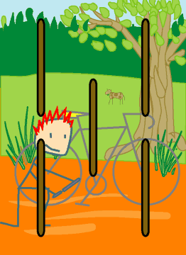

→
Damian Cugley →
Alleged Tarot 2002 →
png →
→
Damian Cugley →
Alleged Tarot 2002 →
png →
| « The Four of Wands | The Six of Wands » | |
|  | ||
|
The Five of Cups The Five of Swords The Five of Coins |
||
Upright: minor problems, struggle
Reversed: rivalry, squabbling, disruption
After the stability of 4, the number 5 represents disruption and discord; to Discordians, it is Eris’s own number. The fives are generaly inauspicious cards in tarot, but when balanced against with the positive, creative energy of the suit of Wands, the 5 isn’t as bad as all that. It represents a problem or set-back, but nothing beyond what one’s resourcefulness cannot deal with. In fact, it may even be welcomed as break from the norm, or chance to demonstrate one’s mastery of the situation.
I have illustrated this card with a cyclist repairing a puncture—thus while his journey is interrupted, the interruption is short-lived, because he as the tools he needs to repair the damage.
See also Thirteen’s description on the Aeclectic Tarot site
If your browser supports SVG, then you should visit the SVG version of this page. It is so much more cool!